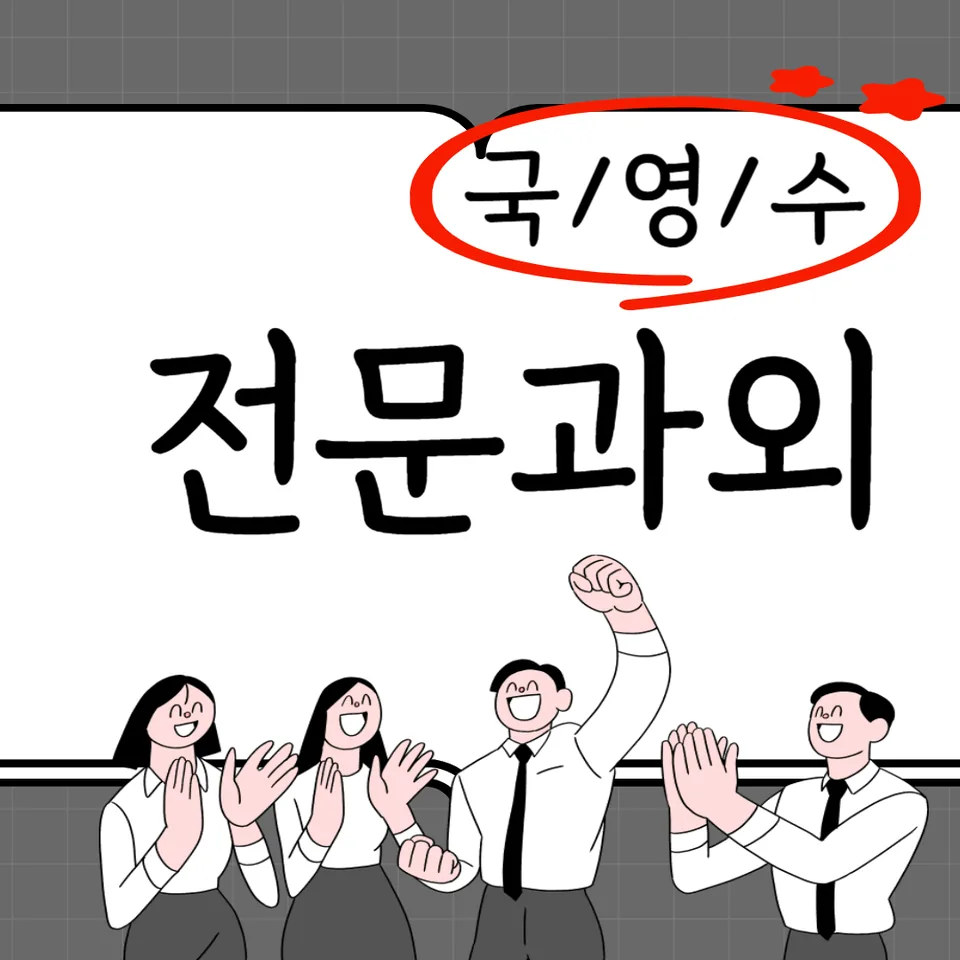

PageType : SUBJECT
URL : /경기도과외/성남시과외/분당구과외/이매동과외/이매동수학과외/
지역 교육환경이 수학 학습에 미치는 영향
이매동수학과외를 찾는 학생들은 대체로 학교 수업 속도와 과제량에 민감하게 반응합니다. 같은 단원이라도 지역별 학습 분위기 차이가 커서, 수업 중 이해가 충분히 남지 않은 채 시험 범위가 바로 넘어가면 학생은 불안부터 느끼곤 합니다. 특히 방과후 활동이나 학원 일정이 촘촘한 시기에는 공부습관이 시간표에 맞춰 흔들리기 쉬워, 수학 학습이 ‘해야 할 일’로만 굳어지기 쉽습니다.
또한 학교 주변에서 이루어지는 스터디나 문제 모임 문화가 강한 편이면, 학생은 비교적 빠르게 개념을 ‘쌓는 방식’에 적응하지만 동시에 오답 분석의 깊이는 얕아질 수 있습니다. 이매동수학과외에서는 이런 흐름을 점검하며, 단순히 문제를 더 푸는 방식보다 내신 중심으로 어떤 방식의 설명이 평가로 이어지는지 확인합니다. 지역 학생들의 일반적인 특징은 이해와 암기를 같은 비중으로 다루려다 보니, 시험 직전에는 개념이 머릿속에서 분리되어 떠오르는 순간이 늘어난다는 점입니다.
학교별 평가 방식과 학습 방향
학교마다 내신의 비중이 달라지고, 수행평가가 포함되는 방식도 달라 학생의 학습 방향이 자연스럽게 바뀝니다. 어떤 학교는 서술형에서 사고 과정을 요구하고, 다른 학교는 계산 정확도와 유형 숙지가 더 중요하게 작용합니다. 그래서 이매동수학과외에서는 학생이 배우는 개념이 ‘어떤 문항에서 점수로 연결되는지’를 먼저 정리합니다. 시험에서 원하는 답의 형태가 다르면 같은 공부라도 결과가 달라지기 때문입니다.
평가가 진행될수록 학생은 점수 기준을 읽기 시작하지만, 그 과정에서 ‘어떤 실수를 해야 다시 덜 틀리는지’가 흐릿해질 때가 있습니다. 이때 학부모는 “문제를 푸는데 왜 점수가 흔들리죠?”라고 자주 묻습니다. 이매동수학과외에서는 학교 수업-과제-시험이 이어지는 고리를 보여주며, 수학을 공부하는 이유가 성적 자체가 아니라 학습 과정의 안정화에 있다는 관점을 잡아줍니다.
학생들이 수학을 어려워하는 주요 원인
학생이 수학에 어려움을 느끼는 시기는 대체로 중간고사 전후로만 오지 않습니다. 개념이 이어져야 하는 구간에서 한 번 막히면, 이후 단원이 연결되지 않아 학습이 누적되기 쉬워집니다. 특히 이매동수학과외에 처음 들어온 학생들 중에는 ‘이해가 안 되는 부분을 건너뛰는 방식’으로 버틴 경험이 있는 경우가 많습니다. 그러다 시험이 가까워질 때 갑자기 오답이 늘며, 문제 해결 과정이 머뭇거리는 시간이 길어집니다.
또 다른 원인은 오답을 단답형으로 처리하는 습관입니다. 틀린 문제를 다시 보는 동안에도 왜 틀렸는지보다는 정답만 확인하면, 같은 유형에서 실수의 패턴이 반복됩니다. 이매동수학과외에서는 오답을 분석할 때 개념의 빈틈, 읽기 오류, 계산 습관, 조건 정리의 누락 중 무엇이 원인인지 나눠봅니다. 그 결과 학생은 수학 학습을 ‘미지의 문제’가 아니라 ‘재발을 줄이는 훈련’으로 받아들이기 시작합니다.
학년 변화에 따른 수학 학습의 차이
학년이 올라가면 부담이 늘어나는 이유는 단원 수만이 아닙니다. 학교가 요구하는 설명의 질과 문제의 결합 방식이 달라져서, 학생은 같은 시간에 더 많은 연결을 처리해야 합니다. 예를 들어 상위 학년에서는 한 문항 안에 여러 조건이 섞이고, 사고력과 문제 해결의 흐름이 평가에 반영됩니다. 그래서 이매동수학과외에서는 학년 전환 시점에 공부습관 점검을 먼저 진행합니다.
초기에는 개념을 이해하는 과정이 중심이 되지만, 점차 시험 기간의 학습 패턴이 바뀝니다. 처음엔 이해-연습의 순서로 움직이다가, 시험이 가까워지면 유형 중심으로 급히 전환하려는 경향이 생깁니다. 이때 계획적인 학습 습관이 흔들리면 복습이 밀리고, 결국 시험에서 익숙한 유형만 찾게 됩니다. 이매동수학과외는 시간이 부족해 보일 때일수록 복습의 비율을 어떻게 조정할지 구체적으로 다루어, 학생이 공부를 끊임없이 이어가도록 돕습니다.
꾸준한 학습이 실력으로 이어지는 과정
수학 실력은 한 번의 이해로 고정되지 않고, 다시 떠올릴 기회가 있어야 안정됩니다. 이매동수학과외에서 강조하는 흐름은 ‘공부를 오래 하는 방식’보다 ‘되돌아오는 주기’를 만드는 것입니다. 복습이 일관되면 학생은 같은 단원을 다른 표현으로 다시 봐도 당황하지 않게 되고, 수학 개념이 생활 속 언어처럼 자연스럽게 연결됩니다.
학부모가 자주 느끼는 교육 고민도 여기에 맞닿아 있습니다. 과제를 끝내도 불안해하는 학생, 열심히 했는데도 시험이 흔들리는 학생이 있을 때, 원인은 공부량이 아니라 리듬의 부족일 수 있습니다. 이매동수학과외에서는 시험 전후로 복습이 이어지는지 점검하고, 자기주도학습이 자리 잡는 과정을 분해해 확인합니다. 학생이 스스로 점검하고 계획을 수정하는 순간, 수학 학습은 점차 통제 가능한 영역이 됩니다.
문제 해결력을 키우는 학습 습관
문제 해결력은 풀이 기법이 아니라 관찰과 선택의 습관에서 자라납니다. 학생이 문항을 만나면 먼저 조건을 정리하고, 무엇을 묻는지 확인한 뒤, 사용할 수 있는 개념을 떠올리는 과정을 반복해야 합니다. 이매동수학과외에서는 이런 사고의 순서를 훈련하며, 같은 유형이라도 해결 전략을 스스로 선택하도록 돕습니다.
오답이 나왔을 때도 바로 “다음 문제”로 넘기지 않는 태도가 중요합니다. 틀린 문제를 분석해 실수의 원인을 줄이면, 다음에 같은 함정이 등장했을 때 학생은 미리 멈칫하는 경험을 하게 됩니다. 이때 사고력과 문제 해결의 연결이 강화되며, 점점 더 적은 시간으로 판단할 수 있게 됩니다. 결과적으로 시간 효율을 높이는 방법도 자연스럽게 생기고, 학생은 공부습관을 시험 기간에 맞춰 급변시키지 않고 유지합니다.
복습과 학습 관리가 중요한 이유
복습은 단순 재학습이 아니라 학습 관리의 핵심입니다. 학생이 이해했다고 느끼는 순간에도, 시험장에서 같은 조건을 다시 만나면 기억이 흔들릴 수 있습니다. 그래서 이매동수학과외에서는 단원별로 무엇을 ‘다시 불러오는지’를 정하고, 복습이 학습 성과로 이어지는 과정을 관찰합니다. 복습이 있는 학생은 문제 유형이 바뀌어도 개념의 연결을 지켜내는 경향이 큽니다.
학습 관리가 잘 되지 않으면 시험 직전에 시간만 늘고, 오답은 쌓이지만 분석은 줄어듭니다. 이때 학생은 정답을 외우는 쪽으로 기울어지고, 내신 준비의 구조가 무너집니다. 이매동수학과외는 오답-복습-재도전의 흐름을 고정해, 학생이 자기주도학습을 스스로 설계하도록 만듭니다. 또한 학교와 가정에서 이어지는 학습 환경이 함께 맞물려 돌아가도록 체크합니다.
수학 학습에서 확인해야 할 핵심 요소
이매동수학과외에서는 다음 요소들이 함께 작동하는지 확인합니다. 학교 수업에서 얻은 개념이 과제로 이어지고, 과제가 시험 형태의 질문과 연결되는지 점검해야 합니다. 학생의 학습 변화는 보통 ‘새 문제를 푸는 능력’보다 ‘다음에 덜 막히는 능력’으로 먼저 나타나므로, 그 지점을 세밀하게 관찰합니다. 또한 사고력이 성장하는 학습 경험이 반복되도록, 공부 중간에 확인 시간을 넣습니다.
- 학교 수업과 시험 범위에 맞는 학습 계획을 세우고 있는지 확인합니다.
- 개념을 암기하는 데 그치지 않고 문제 해결 과정에 활용하고 있는지 점검합니다.
- 틀린 문제를 다시 풀어보며 실수의 원인을 꾸준히 분석합니다.
- 단기 성과보다 지속적인 복습과 학습 습관을 유지하고 있는지 살펴봅니다.
이 과정에서 학생은 수학을 더 이상 두려운 과목으로만 느끼지 않게 됩니다. 이해하고 활용하는 학습이 쌓이면, 문제 해결의 흐름이 보이기 시작하고, 오답은 부담이 아니라 다음 학습의 신호가 됩니다. 결국 내신과 수행평가를 준비하는 과정도 ‘압박’이 아니라 ‘축적된 연습의 결과’로 바뀝니다.
자주 묻는 질문
수학 학습은 언제부터 체계적으로 준비하는 것이 좋을까요?
학년이 바뀌기 전후로 학교에서 요구하는 평가 방식이 달라지기 시작할 때부터가 적절합니다. 특히 개념이 이어지는 구간에서 한 번 끊기지 않도록, 수업-과제-복습의 리듬을 먼저 잡는 것이 중요합니다.
학교 내신과 수행평가는 어떻게 함께 준비하면 좋을까요?
내신 시험 유형과 수행평가의 평가 관점을 분리해 보면서 준비 순서를 정하는 편이 안정적입니다. 수업에서 배운 개념이 어떤 형태의 서술, 과정, 정확도로 점수화되는지 확인한 뒤 연습량을 조절하는 방식이 효과적입니다.
수학 개념이 부족한 학생도 학습 흐름을 따라갈 수 있을까요?
가능합니다. 핵심은 부족한 개념을 한 번에 채우려 하기보다, 학생이 막히는 지점을 기준으로 이해-활용-오답 분석을 짧은 단위로 연결해 주는 것입니다.
문제 해결력은 어떤 과정을 통해 향상될 수 있을까요?
조건을 정리하고 무엇을 묻는지 확인한 뒤, 사용할 개념을 선택해 보는 사고의 반복이 먼저입니다. 이후 오답을 분석해 같은 실수를 줄이는 단계가 이어지면 문제 해결의 속도와 정확도가 같이 자라납니다.
꾸준한 학습 습관은 어떻게 만들어갈 수 있을까요?
시험 기간에 급하게 바꾸기보다 평상시에도 복습 시간을 고정해 두는 방식이 좋습니다. 공부습관은 계획을 세운 뒤 지키는 과정에서 생기므로, 학생이 스스로 점검하고 조정하는 자기주도학습 흐름을 함께 만드는 것이 핵심입니다.
